DEVELOPMENT OF THE NERVOUS SYSTEM
Molecular Regulation of Deyelopmed of NS
- Dosal and ventral regions of the spinal cord depends on gradient between members of TGFBeta ( secreted by dorsal neural tube) and SHH (secreted by floor plate and notochord).
- BMP 4&7 secreted by overlying ectoderm establish a cascade of T G F-B proteins that control space and timing of differentiation.
- Two overlapping concentrations of TGF-B and SHH activate transcription factors that regulate sensory and motor neuron.

A
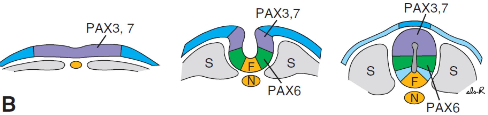B gure 19.14 Molecular regulation of spinal cord development. A. Sonic hedgehog HH), secreted by the notochord, ventralizes the neural tube and induces a floor plate gion (F) that also expresses this gene. Bone morphogenetic proteins 4 and 7 are creted by the nonneural ectoderm and contribute to differentiation of the roof and ar plates. B. Initially, PAX3 and 7 and MSX 1 and 2 are expressed uniformly throughout e neural plate. SHH represses expression of these genes in the ventral half of the ural tube that will become the floor and basal plates. Simultaneously, BMPs upregulate d maintain expression of PAX 3 and 7 in the dorsal half of the neural tube that will rm the roof and alar plates. PAX 6 begins expression throughout the neural ectoderm the neural folds elevate and close. The exact roles of the PAX and MSX genes in
Brain
- Homeobox genes give signals for segregation of the brain into forebrain, midbrain and hindbrain.
- Retinoic acid regulates homeobox gene expression and craniocaudal patterning.
- FGF-8 is a key signaling molecule inducing subsequent gene expression that regulates differentiation.
- Transcription factor FOXG1 regulates development of cerebral hemispheres and specification within the forebrain.
- Lateral patterning is controlled by BMP4&7.
- SHH induces NKX2,1 gene that regulates development of hypothalamus.
- FGF-8 induces WNT1 expression that regulate regions of the cerebellum.
Figure 19.34 Organizing center in the isthmus at the boundaries between the midbrain and hindbrain. This region secretes FGF-8 in a circumferential ring that induces expression of engrailed 1 and 2(EN1 and EN2) in gradients anteriorly and posteriorly from this area. EN1 regulates development of the dorsal midbrain, and both genes participate in formation of the cerebellum. WNT1, another gene induced by FGF-8, also assists in development of the cerebellum. $N$, notochord; $P$, prechordal plate.
Key words in molecular control of development of nervous system.
- Tissue interaction (nearby or faraway).
- Signals (difusable or nondifusable) from inducer cells (proteins, growth factors, retinoic acid, folic acid, hormones.....).
- Signals received on specific receptors of respondent cells.
- Biochemical reactions are activated in respondent cells.
- Specific Gene activation and sequence of gene expressions take place.
- Cellular differentiation into specific cells.
Key words in development of NS
Tissue interaction, induction, mitosis, neural plate, neural folds, neural tube, neural crest, neural canal, neuroepithelium, neurulation, fusion, closure, segregation, flexuring, mantle layer, marginal layer, ependyma, basal plate, alar plate, roof plate, floor plate, neuroblasts, glioblasts, differentiation, orientation of cranial nerve nuclei, neuronal wave migration, encephalization, sulcation, invagination, evagination, semicircular patterning, myelination.
Origin of nervous system
NS is ectodermal in origin, develops early in the 3rd week from the neural plate, a slipper-shaped thickened area between primitive knot and prechordal plate.
Formation of the neural tube (neurulation)
Neurulation is the process by which the embryo internalizes its developing nervous system.
By day 18, the neural plate invaginates along its central axis to form a longitudinal groove, neural groove with neural fold on each side. The neural folds approach each other and fuse forming the neural tube. Formation of the neural tube begins in the region of the 4th to 6th somites (cervical region) and proceeds in a cranial and caudal directions until only small areas remain open at both ends of the tube, cranial and caudal neuropores. Neuropores communicate neural canal with amniotic cavity. The neural tube soon detaches and the free edges of the surface ectoderm fuse..
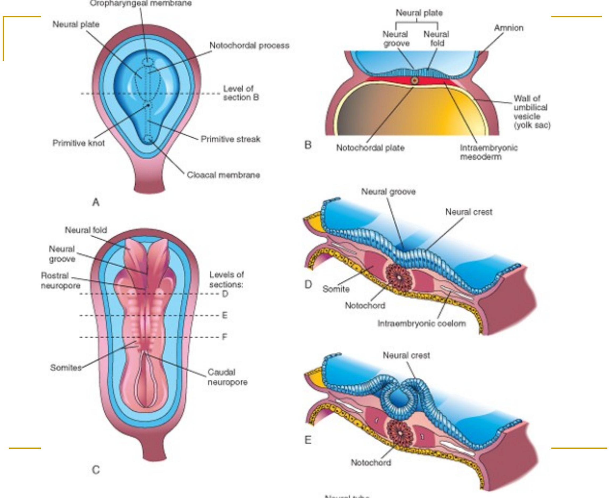
Nature Reviews | Neuroscience
The cranial broad 2/3 of the neural tube as far as the 4th somite represents the brain, and the caudal narrow 1/3 represents the spinal cord. Closure of the cranial neuropore is bi-directional. Final closure of the cranial neuropore occurs on the 25th day. Closure of the caudal neuropore occurs on the 27th day. Neurulation is then complete and the CNS is represented by a closed tubular structure. The neural canal is converted into the ventricular system of the brain and central canal of the spinal cord. The brain shows three dilatations:
- forebrain (prosencephalon)
- midbrain(mesencephalon)
- hindbrain (rhombencephalon).
 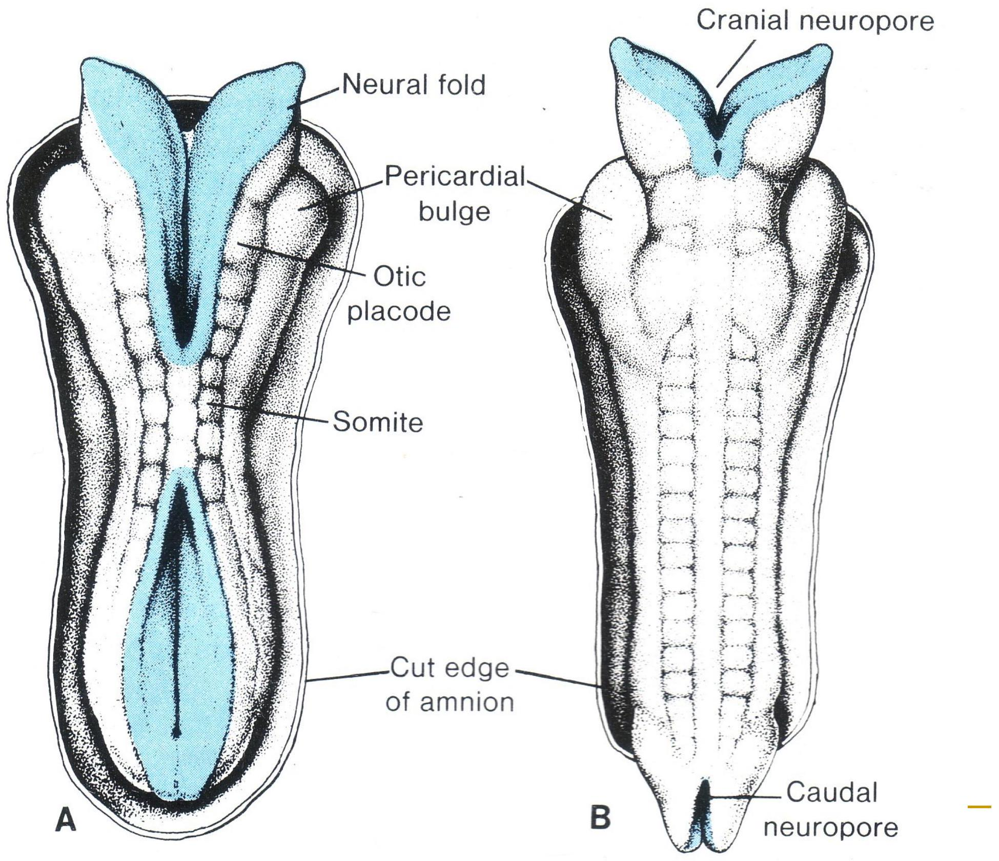
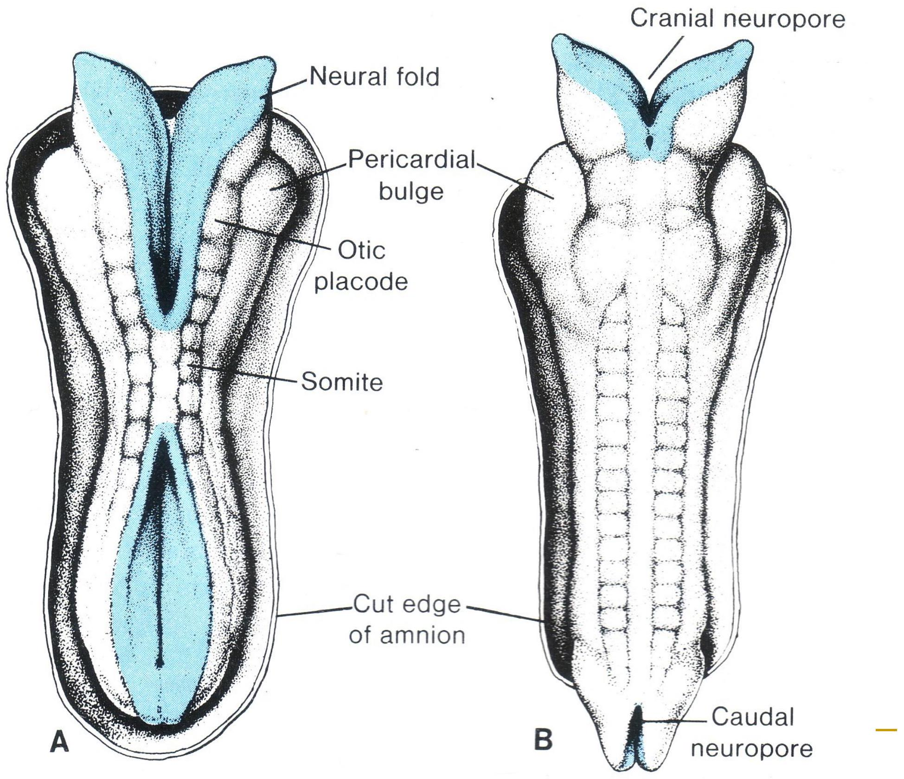
Formation of the neural crest
As neural folds fuse, some neuroectodermal cells along lateral border of neural folds lose epithelial affinity, dissociate, migrate dorsolaterally and undergo mesenchymal transition. Cells form flattened mass, neural crest, between the neural tube and the overlying ectoderm. They separate into right and left parts. Cells disperse within mesenchyme and differentiate giving:
- ganglia(spinal, autonomic and cranial).
- Neurolemma (Schwann) cells and satellite cells.
- Involved in development of pia and arachnoid.
- Melanocytes.
- Suprarenal medulla.
- CT, skeletal and muscular components of head region including mesenchyme of the pharyngeal arches.
- Cushions of the heart.
- Odontoblasts.
- Chromaffin cells in paraganglia.
- Structures in the eye as the cornea, pupillary muscles and vitreous body.

 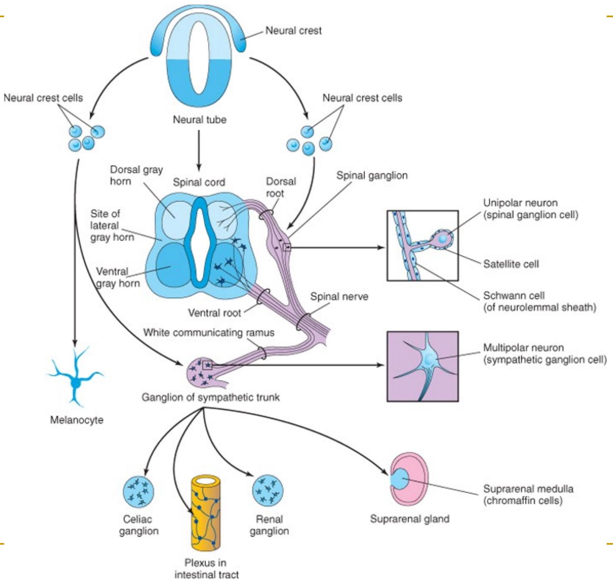
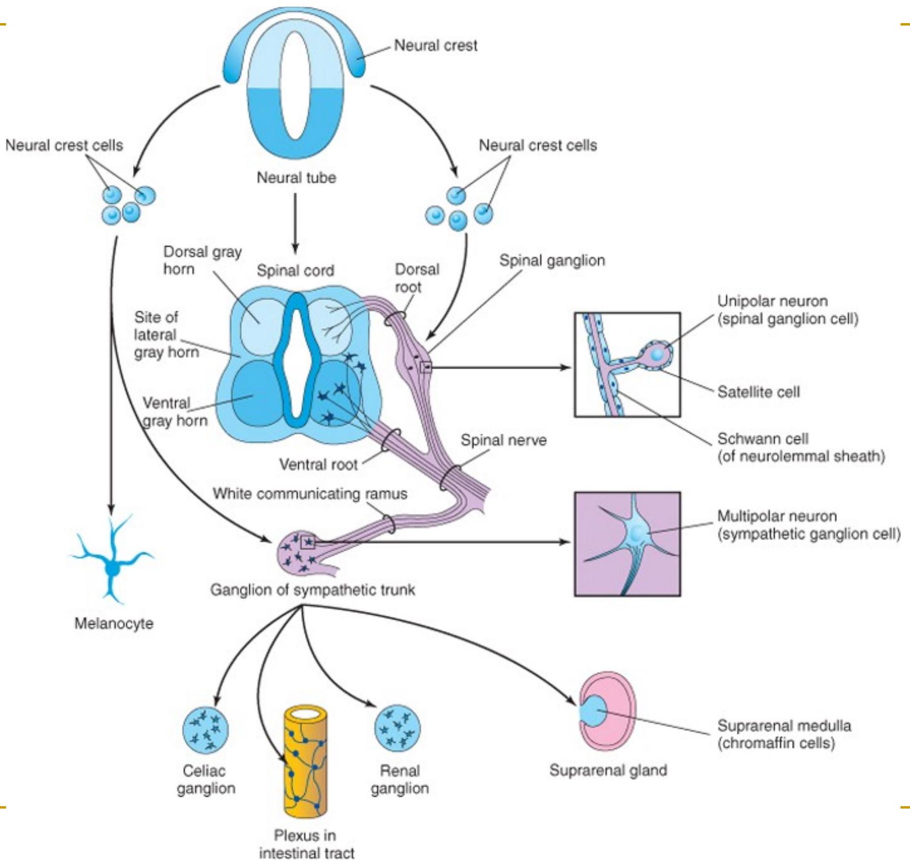
DEVELOPMENT OF SPINAL CORD
Neuroepithelial, mantle& marginal layers
Neural tube caudal to 4th pair of somites develops into the spinal cord. The wall of the neural tube is lined by psudostratified columnar neuroepithelial cells. Cells are connected by junctional complexes at the lumen. These cells divide rapidly giving more neuroepithelial cells. Some of the dividing cells differentiate into primordial neurons, neuroblasts. Neuroblasts form a zone around the neuroepithelium known as mantle layer. The mantle layer forms the gray mater. Nerve fibers emerging from neuroblasts form the outermost layer known as marginal layer. This layer obtains a white appearance as a result of myelination of fibersforming white mater of spinal cord.
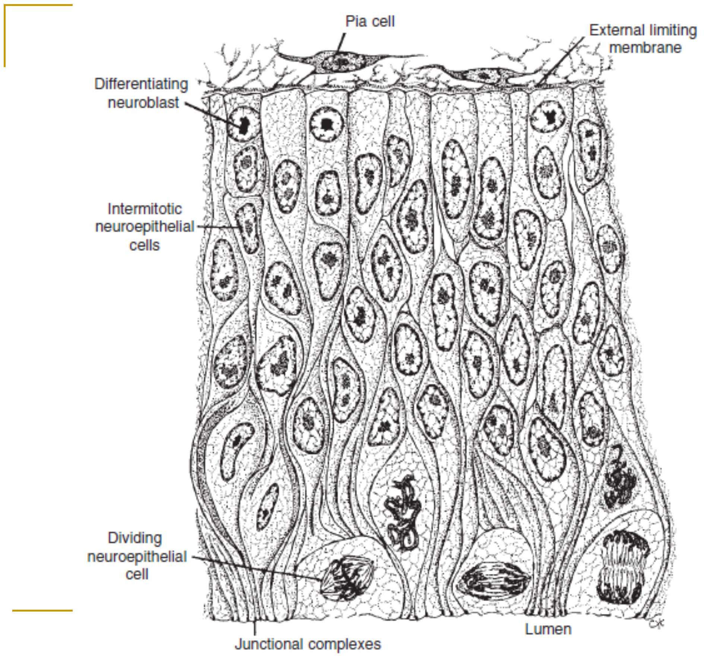
Figure 19.10 A. Motor axons growing out from neurons in the basal plate and centrally and peripherally growing fibers of nerve cells in the dorsal root ganglion. B. Nerve fibers of the ventral motor and dorsal sensory roots join to form the trunk of the spinal nerve.
Development of the spinal cord -5 weeks
 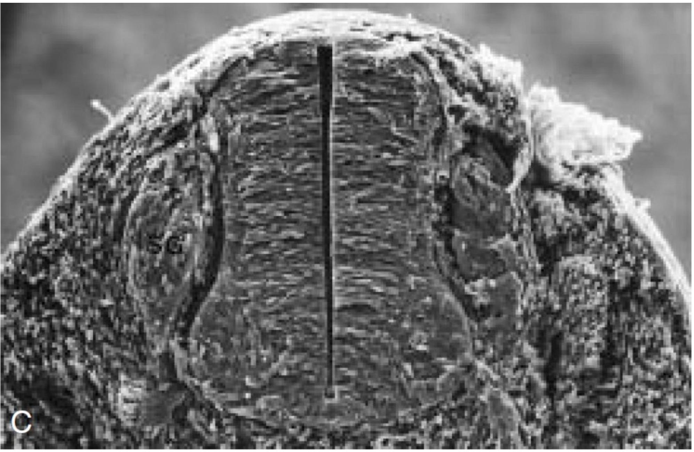
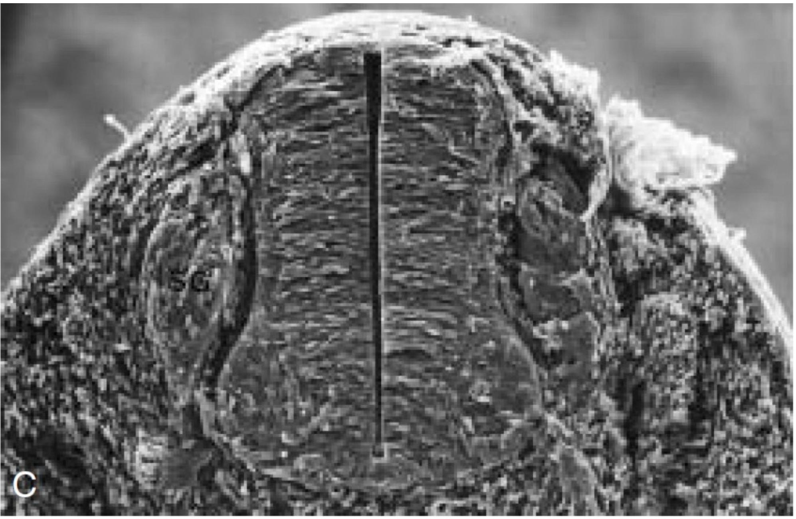
Basal, alar, roof and floor plates
As a result of continuous addition of neuroblasts to the mantle layer, each side of the neural tube shows a ventral and a dorsal thickening. Differential thickening of the lateral walls of the neural tube produces a shallow longitudinal groove on each side called sulcus limitans which separates the ventral from the dorsal thickenings. The ventral thickenings, the basal plates, form the ventral and lateral gray horns of the spinal cord whose cells are motor and autonomic neurons. Neurocytes of the anterior horn migrate and develop first before the posterior horn. The dorsal thickenings, alar plates, form the dorsal gray horns of the spinal cord whose cells constitute the sensory neurons. Dorsal and ventral midline portions of the neural tube, known as roof and floor plates, do not contain neuroblasts and serve as pathway for fibers crossing from one side to the other. Neuroblast proliferation thickens the gray mater of the alar and basal plates in the shape of an H. The crossbar of the H-surrounds the central canal.
- As a result of continuous growth of basal plates, they extend forward on each side of the the midline forming a deep groove called anterior median fissure. Alar plates increse in size and extend medially compressing the posterior portion of the neural tube which come into apposition and fuse to form the posterior median septum.
Development of the spinal cord -8 weeks

Histogenesis of neuroepithelium
-Nerve cells
Neuroblasts are derived from mitoses of neuroepithelial cells. Initially neuroblasts have central processes extending to the lumen (transient dendrite), but when they migrate into the mantle layer these processes disappear. Neuroblasts are temporarily rounded and apolar. With further differentiation, two new processes appear on the opposite sides of the cell body thus forming bipolar neuroblast. One process elongates to form the primitive axon, while the other process shows arborizations to form the primitive dendrite. The cell is then known as a multipolar neuroblast and later neuron.
Glial cells
The majority of glioblasts are formed by neuroepithelial cells after production of neuroblasts has ceased. Glioblasts migrate into the mantle and marginal layers. In the mantle layer, they differentiate into astroblasts and then into protoplasmic and fibrous astrocytes. Protoplasmic astrocytes are found mainly in the gray mater while fibrous astrocytes are found mainly in the white matter. Another type of supporting cells derived from glioblasts, the oligodendroblasts give rise to oligodendrocytes. Oligodendroglia, found mainly in the white mater, form myelin sheath around nerve axons. In the marginal layer a third type of supporting cells derived from mesenchyme is known as microglia. Microglia are phagocytic cells.
Histogenesis of cells in the CNS
Ependymal cells
When neuroepithelium ceases to produce neuroblasts and glioblasts, its cells differentiate into ependymal epithelium which line the central canal of the spinal cord in the form of simple columnar partially ciliated epithelium.
Spinal ganglia
Unipolar neurons in the spinal ganglia are derived from neural crest cells. Axons of these cells are at first bipolar, but the two processes soon unite in a Tshaped fashion. The peripheral processes pass in the spinal nerve to sensory endings. The central processes enter the spinal cord and constitute the dorsal roots of the spinal nerves. These central processes penetrate the dorsal portion of the neural tube and end in the dorsal horn cells or ascend through the marginal layer to higher centers.
Spinal nerves
Motor nerve fibers appear during the 4th week from neurons located in the basal plates (ventral horns). Motor nerve fibers form bundles known as ventral roots. Dorsal roots originate from cells in the dorsal root (spinal) ganglia. Peripheral processes from spinal ganglia join ventral roots to form the spinal nerve trunk. Almost immediately the spinal nerve divides into dorsal and ventral primary rami. The dorsal rami innervate dorsal axial muscles, vertebral joints and skin of the back. The ventral rami innervate the limbs, ventrolateral body walls, and form the major nerve plexuses (cervical, brachial and lumbosacral).
Myelination
Myelination of peripheral nerves is done by Schwann (neurolemma) cells which migrate peripherally and wrap themselves around axons forming neurolemma sheath. Myelin is formed by repeated coiling of Schwann cell membrane around the axon. Myelin surrounding nerve fibers inside the spinal cord is formed by oligodendroglia. Motor roots are myelinated before the sensory roots. Although myelination begins during the 4th month of intrauterine life, some motor fibers descending from the brain centers are myelinated by the end of the first year and most of them by the end of 2nd year. However, some nerve fibers in the cerebrum get myelinated at 10 and up to 20 years of age.
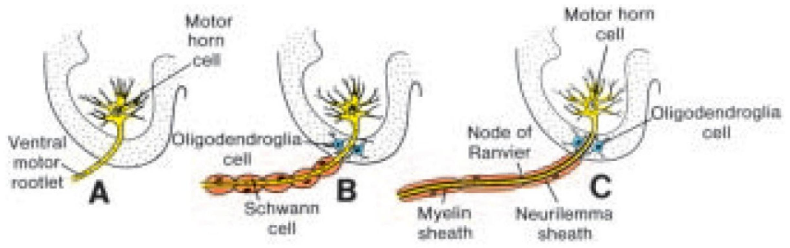Figure 19.12 A. Motor horn cell with naked rootlet. B. In the spinal cord oligodendroglia cells surround the ventral rootlet; outside the spinal cord, Schwann cells begin to surround the rootlet. C. In the spinal cord the myelin sheath is formed by oligodendroglia cells; outside the spinal cord the sheath is formed by Schwann cells.
Myelination of nerve fibers
A

B

C

D

E

Position changes of the spinal cord
The spinal cord in 3-month embryo extends the entire length of the vertebral canal. Because the vertebral column and dura mater grow faster than the neural tube, the caudal end of the spinal cord comes to lie at a higher level. In 6-month fetus, the cord lies at the level of S1. In the newborn the spinal cord terminates at level of L3. In the adult, the cord terminates at level of lower border of L1. As a result of this recession, spinal nerve roots especially those of the lumbar and sacral segments run obliquely from the spinal cord to their corresponding levels of the vertebral column. Nerve roots inferior to the lower end of the cord (conus medullaris) form cauda equina. The dura and arachnoid end at level of S2. The pia extends from the tip of the conus medullaris piercing arachnoid and dura to attach to the 1st coccygeal vertebra in the form of a long fibrous thread known as filum terminale which indicates the line of regression of the caudal end of the embryonic spinal cord.

A

Anomalies of the spinal cord
Most of the anomalies of the spinal cord result from abnormal closure of the neural tube during the 4th week of development. Neural tube defects (NTDs) also affect tissues overlying the spinal cord: meninges, vertebral arches, muscles and skin. The incidence of severe neural tube defects is approximately 1 in 1000, but varies in different populations.
Causes of neural tube defects are mostly multi-factorial. Hypothermia, hyperthermia, Valproic acid (anticonvulsant drug), Hypervitaminosis A and Folic acid deficiency are major factors..
Diagnosis of neural tube defects is by
- Ultrasonography.
- Increased alpha-fetoprotein (AFP) levels in amniotic fluid or serum of the mother.
1-Spina bifida refers to splitting of the vertebral arches. This term denotes nonfusion of the primordial halves of the vertebral (neural) arches, which is common to all types of spina bifida.
a)Spina bifida occulta refers to defect in the vertebral arches that does not involve the underlying neural tissue. The defect is covered by skin and is represented by a small dimple with a tuft of hair arising from it. Spina bifida occulta is usually present at L5 or S1 and it occurs in 10% of people producing no symptoms.
Varieties of spina bifida
 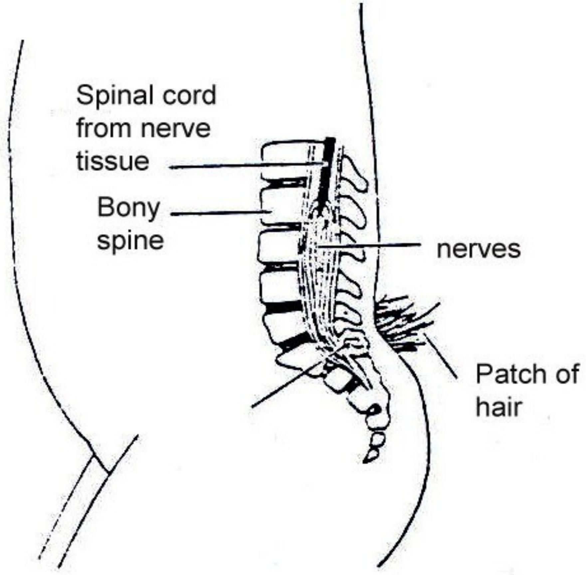
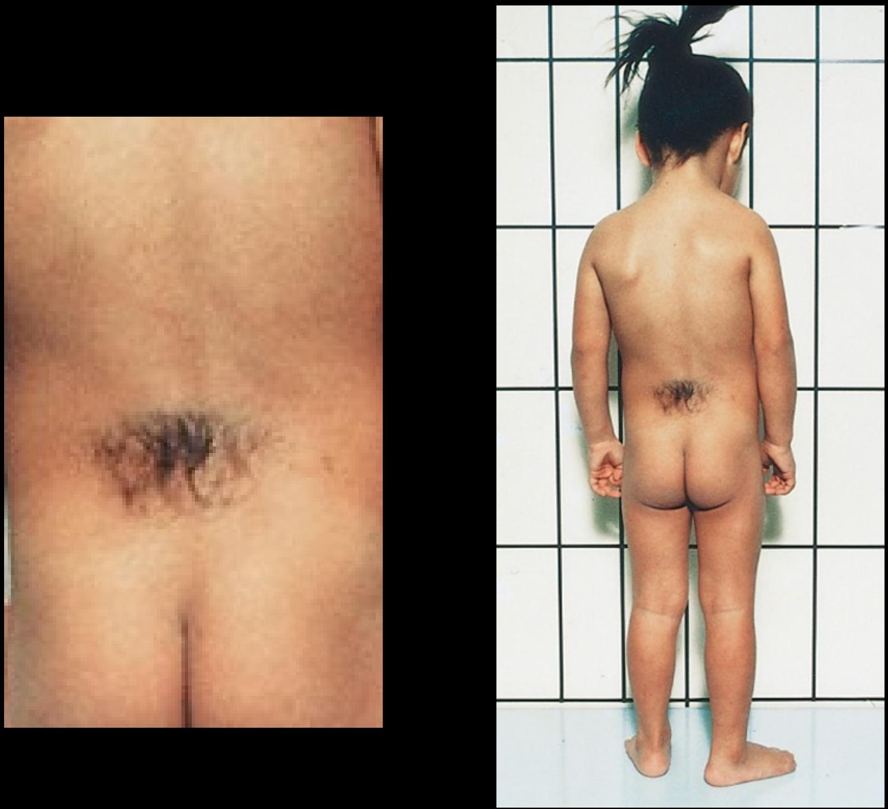
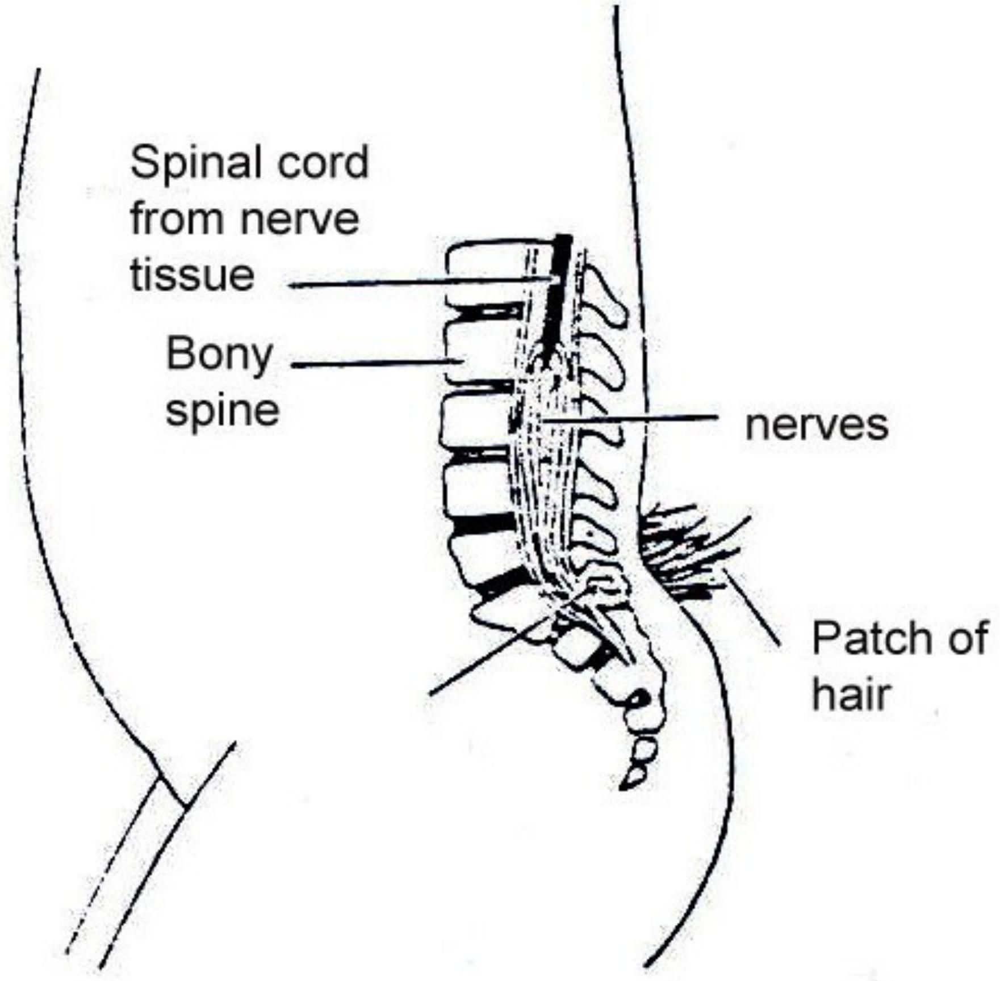
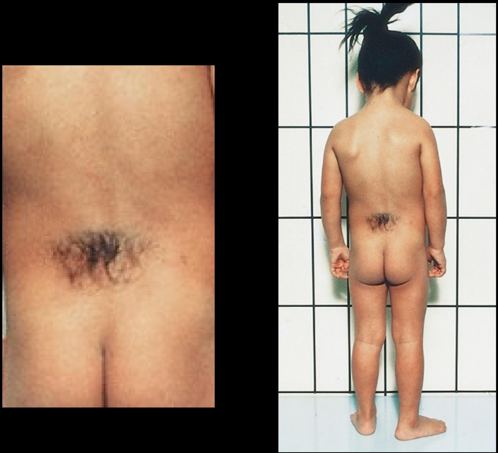
b)Spinal dermal sinus is a skin dimple associated with a sinus at the sacral region. The dimple indicates the region of closure of the caudal neuropore. Dimple may connect with dura by a fibrous cord.
c)Spina bifida cystica is protrusion of spinal cord and or the meninges through a defect in the vertebral arches. It occurs once in every 1000 births. When the protruding sac contains meninges and cerebrospinal fluid, the anomaly is spina bifida with meningocele. If spinal cord and or nerve roots are included in the sac, anomaly is spina bifida with meningomyelocele. Meningomyelocele is more common and more severe than meningocele. Spina bifida cystica shows varying degrees of neurological deficits depending on position and extent of the lesion. There is usually loss of sensation with muscular paralysis. Sphincteric paralysis is common with lumbosacral meningomyelocele. There is saddle anesthesia when the sphincters are involved.

Figure 3. Menimgocele
Meningomyelocele

 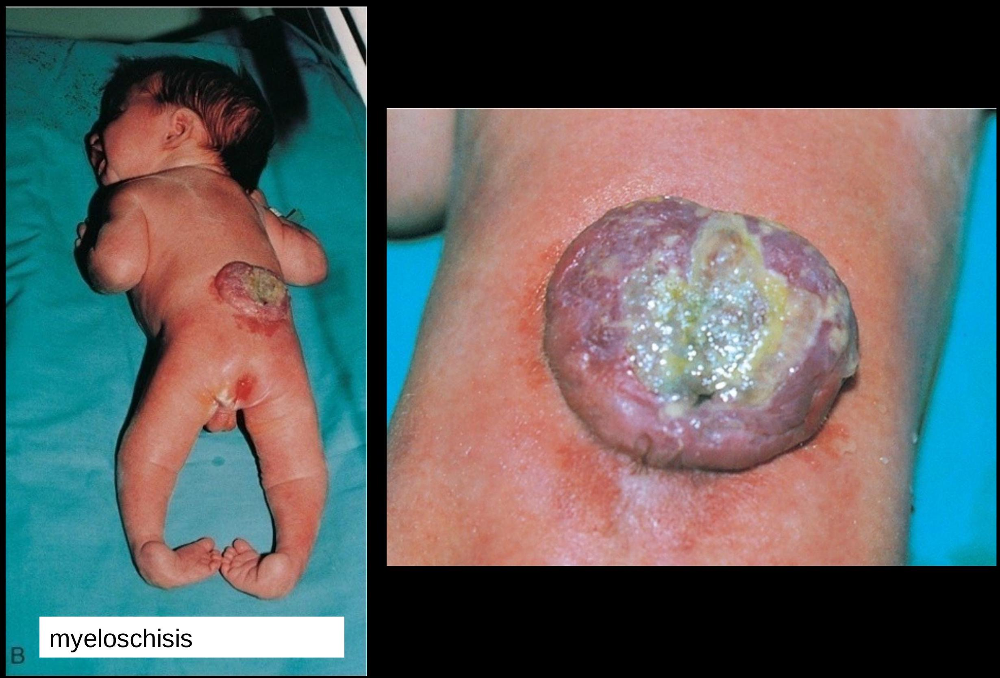
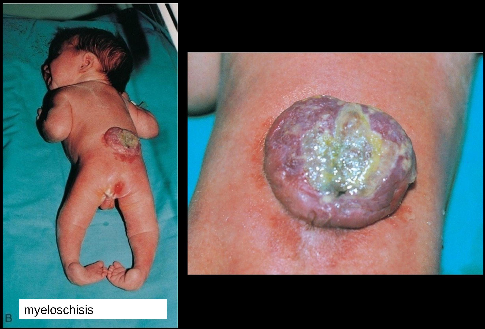
d)Spina bifida with myeloschisis (rachischisis) is the most severe type of spina bifida. The spinal cord is open because the neural folds fail to fuse. The spinal cord is represented by a flattened mass of nervous tissue.
2-Amyelus is absence of the spinal cord.
3-Duplication of the spinal cord.
4-Syringomyelocele is gross dilatation of the central canal plus meningomyelocele.
Rachischisis

DEVELOPMENT OF BRAIN
Brain vesicles
The neural tube cranial to the 4th pair of somites develops into the brain. After closure of the cranial neuropore, the brain shows three primary vesicles:
- forebrain (prosencephalon)
- midbrain (mesncephalon)
- hindbrain (rhombencephalon)
During the 5th week the forebrain partly divides into two secondary brain vesicles, telencephalon and diencephalon. The midbrain does not divide. The hindbrain partly divides into two secondary vesicles; metencephalon and myelencephaalon. Each of the five secondary brain vesicles has a wall, a lumen and contains a cavity.
Primary and secondary braimain vesicles
5 Secondary vesicles
Adult derivatives of
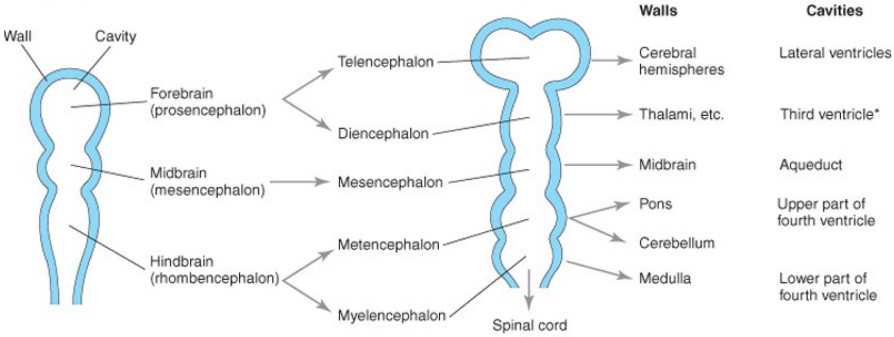

Figure 19.5 Scanning electron micrograph of a sagittal section through a mous bryo at approximately 32 days of human development. The three brain vesicle segregated into the telencephalon ( T ), diencephalon ( D ), mesencephalon ( M ), cephalon (Mt), and myelencephalon (My). Asterisk, outpocketing of the telencep arrow, rhombencephalic isthmus; arrowheads, roof of the fourth ventricle; o, optic
Brain flexures
During the 4th week the brain grows rapidly and bends ventrally with the head fold. Folding of the embryo and unequal growth of the different parts of the brain produce brain flexures. These flexures are in order:
- Midbrain flexure is the first to appear in the midbrain region and is ventrally curved.
- Cervical flexure is between the hindbrain and the spinal cord and is ventrally curved.
- Pontine flexure appears in the region of the metencephalon and is dorsally curved.
- Forebrain flexure is the last to appear in the forebrain and is dorsally curved.

Figure 19.17 Lateral view of the brain vesicles in an 8-week embryo (crown-rump len approximately 27 mm ). The roof plate of the rhombencephalon has been removed show the intraventricular portion of the rhombic lip. Note the origin of the cranial nerv
Forebrain
Midbrain
Hindbrain
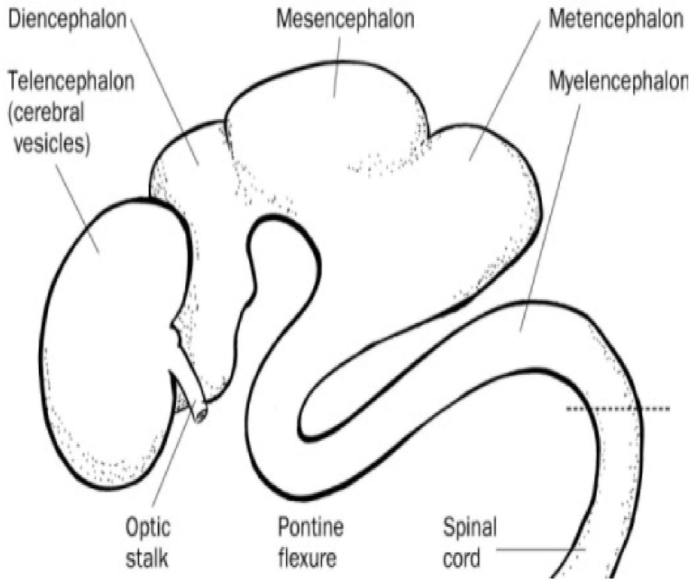 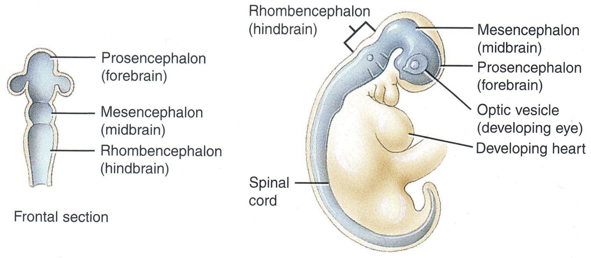
Differences in development between the brain and the spinal cord
- Sulcus limitans extends cranially to the junction of the midbrain and forebrain. Alar and basal plates are recognizable only in the midbrain and hindbrain. In the forebrain alar plates are increased and basal plates disappear.
- Pontine flexure causes:
- thinning of the roof of hindbrain.
- movement of nuclei of medulla and pons; sensory nuclei move laterally and motor nuclei move mediailly.
- Migration of neuroblasts causes gray mater to present mainly on the surface of the cerebrum and cerebellum (cerebral and cerebellar cortices).
- Flexions as well as evaginations and protuberances explain why the final form of the brain differs from the simple linear tube. The brain undergoes flexions that fit it more compactly into the skull.
HINDBRAIN (RHOMBENCEPHALON)
The pontine flexure divides the hindbrain into caudal myelencephalon and rostral metencephalon. Myelencephalon bocomes the medulla oblongata and metencephalon becomes the pons and cerebellum. The cavity of the hindbrain becomes the 4th ventricle and central canal in the medulla.
A.Dorsal view of the 4th ventricle. B.C.differentiation of alar and basal plates of myelencephalon.

MYELENCEPHALON (MEDULLA OBLONGATA)
The caudal part of myelencephalon (closed medulla) resembles the spinal cord. The neural canal forms the central canal. Unlike those of the spinal cord, neuroblasts from alar plates migrate into the marginal zone to form isolated gracile (medially) and cuneate (laterally) nuclei. The ventral area of the medulla contains a pair of bundles - pyramids, corticospinal tracts descending from the developing cerebral cortex.
The rostral part of the myelencephalon (open medulla) is wide and flat. The pontine flexure causes:
- lateral walls of medulla move laterally as pages of an open book.
- the roof plate to become stretched and greatly thinned.
- cavity of the myelencephalon (4th ventricle) becomes diamond.
- alar plates become lateral to basal plates; sensory nuclei of the medulla develop lateral to motor nuclei.
Neuroblasts of the alar (sensory) plates differentiate into 4 columns on each side arranged from lateral to medial:
a-Special somatic afferent (SSA) neurons receive impulses from the inner ear by the way of vestibulocochlear nerve, represented by vestibular and cochlear nuclei.
b-General somatic afferent (GSA) neurons receive sensory impulses from face, represented by spinal trigeminal nucleus.
c-Special visceral afferent (SVA) neurons receive taste impulses from tongue, palate, oropharynx and epiglottis (carried by facial, glossopharyngeal and vagus nerves) and are represented by the gustatory nucleus.
d-General visceral afferent (GVA) neurons receive sensory impulses from the viscera carried by IX and X cranial nerves to nucleus solitarius.
Neuroblasts of the basal plates develop into motor nuclei and organize into 3 cell columns on each side from lateral to medial:
a-General visceral efferent (GVE) neurons supply involuntary muscles (of respiratory tract, GIT and heart) by the way of parasympathetic fibers in the vagus and glossopharyngeal nerves and are represented by dorsal motor nucleus of vagus and inferior salivary nucleus.
b-Special visceral efferent (SVE) neurons supply muscles derived from the pharyngeal arches and are represented by nucleus ambiguous (shared by cranial nerves IX, X, XI).
c-General somatic efferent (GSE) neurons represented by the hypoglossal nucleus. Some neuroblasts of the alar plates migrate ventrally and form neurons of the olivary nuclei (cerebellar relay nuclei).
Choroid plexuses and cerebrospinal fluid
The stretched roof plate of the myelencephalon consists of a single layer of ependymal cells covered by vascular mesenchyme, the pia mater. The ependyma and pia combined are known as tela choroidea. A number of vascular invaginations project into cavity of the 4th ventricle. These tuft-like invaginations form the choroid plexus which secretes the cerebrospinal fluid. Thin roof of the 4th ventricle evaginates in 3 locations and rupture to form a median and 2 lateral apertures (foramen of Magendie and foramina of Luschka) which permit CSF to enter the subarachnoid space.
Similar choroid plexuses develop in roof of the 3rd ventricle and medial walls of the lateral ventricles. Choroid plexuses secrete ventricular fluid which becomes the CSF. The site of absorption of CSF into the venous system is through the arachnoid villi, which are protrusions of arachnoid into the dural venous sinuses. These villi consist of a thin layer derived from epithelium of arachnoid and
METENCEPHALON
Walls of the metencephalon form pons and cerebellum, and its cavity forms superior part of the 4th ventricle.
PONS
Pontine flexure causes divergence of the lateral walls of the pons which spreads the gray substance in the floor of the 4th ventricle. As in the medulla the alar plates develop into 4 groups of nuclei:
a-SSA neurons receive sensations from inner ear, part of vestibulocpchlear complex.
b-GSA neurons receive sensations from the face which reach trigeminal sensory nuclei.
c-SVA neurons receive taste, represented by gustatory nucleus.
d-GVA neurons receive sensations from viscera and represented by nucleus solitarius.

igure 19.19 Transverse section through the caudal part of the metencephalon. Note e differentiation of the various motor and sensory nuclear areas in the basal and ala ates, respectively, and the position of the rhombic lips, which project partly into the men of the fourth ventricle and partly above the attachment of the roof plate. Arrows rection of migration of the pontine nuclei.

The basal plates of the metencephalon consist of 3 groups of motor nuclei arranged from lateral to medial:
a-GVE neurons supply secretomotor parasympathetic fibers (in facial nerve) to lacrimal and salivary glands, and represented by the lacrimal nucleus and superior salivary nucleus.
b-SVE neurons innervate muscles derived from 1st and 2nd pharyngeal arches (muscles of mastication and facial expression), represented by trigeminal motor nucleus and facial motor nucleus.
c-GSE neurons are represented by abducent nucleus.
Nerve fibers connecting the cerebral and cerebellar cortices with the spinal cord pass through the marginal layer of the ventral metencephalon. This region is called the pons or bridge. Pons contains pontine nuclei originate from alar plates of myelencephalon and metencephalon. Axons of pontine nuclei grow transversely to enter the developing cerebellum of the opposite side forming the transverse pontine fibers and middle cerebellar peduncle.
CEREBELLUM
The cerebellum develops from the rhombic lips, two thickenings of the dorsal parts of the alar plates of the metencephalon. Rhombic lips enlarge and fuse in the midline to form the vermis. Lateral expansions of the rhombic lips form the cerebellar hemispheres. As rhombic lips enlarge and fuse they overgrow the rostral part of the 4th ventricle and overlap the pons and medulla.
Differentiation of alar and basal plates of the metencephalon and rhombic lips.

Development of cerebellum

Stages of development of the cerebellar cortex
By the 4th month fissures appear on the surface of the cerebellum. A transverse fissure separates the nodule from the vermis and lateral flocculus from the hemisphere. Flocculonodular lobe (archicerebellum) is the most primitive part of the cerebellum connected mainly with the vestibular apparatus and is concerned with balance. Primary fissure separates the anterior lobe (paleocerebellum) from the posterior lobe (neocerebellum).
The anterior lobe (paleocerebellum) receives input from the spinal cord proprioceptive sensory modalities and is concerned with regulation of muscle tone. The posterior lobe (neocerebellum) receives cortico-pontocerebellar pathway and projection from the inferior olivary nucleus, and is concerned with coordination of sequence, strength and velocity of willed movements.
Some neuroblasts of the alar plates migrate to the marginal zone and develop into Purkinje cells. Others migrate to the surface and differentiate into neurons of the external granular layer. By the 6th month, cells of the external granular layer differentiate to various cell types of the cerebellar cortex including granule cells, basket cells, and stellate cells. The cerebellar cortex reaches its definitive size after birth. Some other neuroblasts give rise to cerebellar nuclei present in the white mater of the cerebellum. The largest of these nuclei is the dentate nucleus. With further development axons of neurons of the cerebellar nuclei grow out into the midbrain to reach the forebrain forming the superior cerebellar peduncle. Inferior cerebellar peduncle is formed by sensory fibers from the spinal cord, vestibular nuclei and olivary nuclei. Middle cerebellar peduncle is formed by pontocerebellar fibers. The superior and inferior medullary vela are formed by the roof plate of the 4th ventricle.
MESENCEPHALON (MIDBRAIN)
The midbrain undergoes lesser changes compared with the hindbrain and forebrain. The neural canal narrows to become the cerebral aqueduct, which connects the 3rd and 4th ventricles.
Waves of neuroblasts from the alar plates migrate into the overlying marginal zone of the tectum (roof) of the midbrain and aggregate to form 4 large groups of neurons, the paired superior and inferior colliculi which are concerned with visual and auditory reflexes. Here, they become arranged in stratified layers.
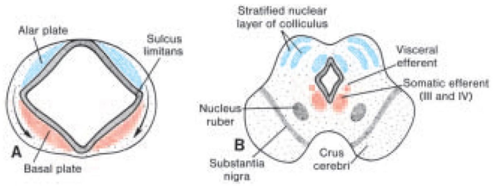Figure 19.23 A and B. Position and differentiation of the basal and alar plates in the mesencephalon at various stages of development. Arrows in A indicate the path followed by cells of the alar plate to form the nucleus ruber and substantia nigra. Note the various motor nuclei in the basal plate.
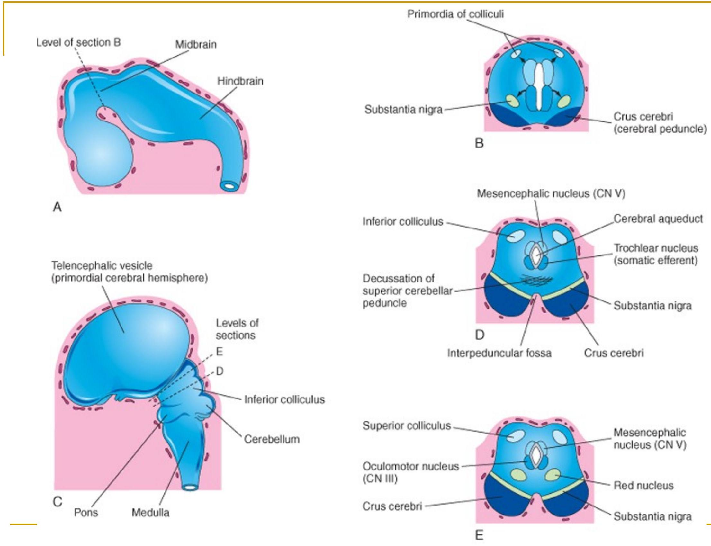The basal plates of the midbrain contain two groups of motor nuclei: (a) somatic efferent (GSE) neurons represented by the oculomotor and trochlear nuclei which innervate the eye musculature; and (b) a small general visceral efferent neurons (GVE) represented by Edinger-Westphal nuclei, which innervate the sphincter pupillary muscles. Neuroblasts from the basal plates give rise to groups of neurons in the tegmentum of the midbrain: red nucleus, reticular nuclei and substantia nigra.
The cerebral peduncles (crura cerebri) are formed by fibers growing and descending from the cerebral cortex (corticopontine, corticobulbar and corticospinal) and passing through the ventral marginal layer of the developing midbrain to lower centers in the brain stem and spinal cord.
PROSENCEPHALON (FOREBRAIN)
During the 4th week of development a lateral diverticulum appears on each side of the prosencephalon (forebrain) named optic vesicles. The part of prosencephalon cranial to optic vesicles forms the telencephalon (cerebrum) and the rest forms the diencephalon.
Medial aspect of brain of 10
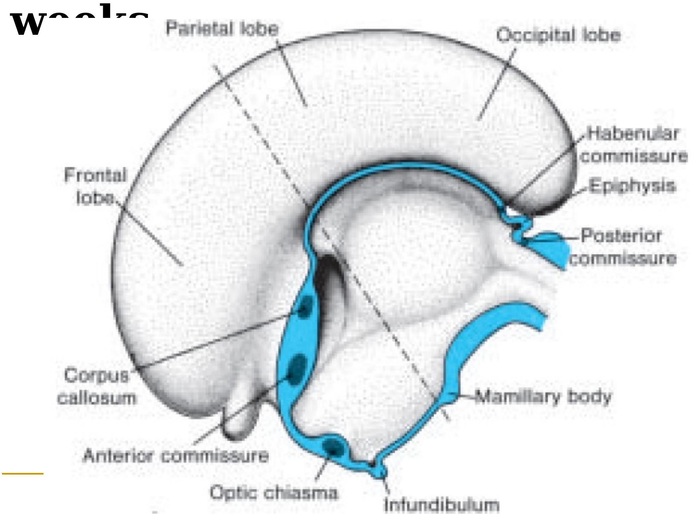 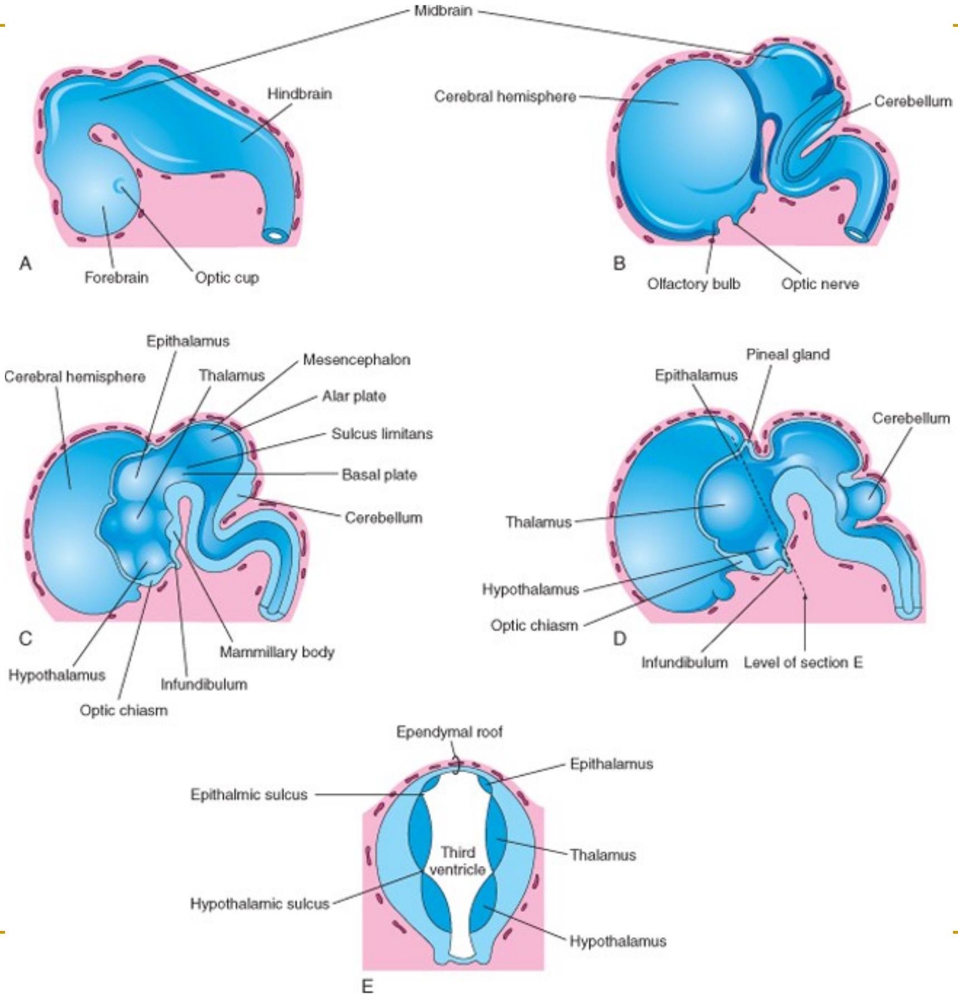

DIENCEPHALON
The diencephalon develops from the median portion of the forebrain (prosencephalon) and consists of roof plate and two alar plates but lacking basal and floor plates.
The alar plates forming the lateral walls of the diencephalon proliferate and show three swellings that become epithalamus, thalamus and hypothalamus. The thalamus is separated from epithalamus by epithalamic sulcus, and from the hypothalamus by the hypothalamic sulcus.

Figure 19.24 A. Medial surface of the right half of the prosencephalon in a 7-week embryo. B. Transverse section through the prosencephalon at the level of the broken line in A. The corpus striatum bulges out in the floor of the lateral ventricle and the foramen of Monro.


Thalami develop rapidly on each side and bulge into the cavity of the 3rd ventricle, reducing it into a narrow cleft. As a result of proliferative activity, expansion of the thalamus is so great that the two thalami fuse in the midline forming the interthalamic adhesion (connexus). The thalamus differentiates into groups of nuclei that relay sensations and information to the cerebral cortex. The visual and auditory impulses relay in the lateral and medial geniculate bodies of the thalamus (metathalamus).
Hypothalami form the lower portion of the alar plates of the diencephalon. The Hypothalamus differentiates into a number of nuclei that serve as regulation centers of visceral functions (digestion, body temperature, sleep and emotional behavior), homeostasis and endocrine activities. A pair of nuclei, mamillary bodies form a distinct protuberance on the ventral surface of the hypothalamus.
Epithalamus develops from the roof and dorsal portion of the diencephalon. The Pineal body (epiphysis) develops from the most caudal part of the roof plate as an epithelial thickening in the midline that evaginates dorsally and becomes a solid organ located at the diencephalic-midbrain junction. The pineal body manufactures melatonin and releases it in a cyclic manner. It mediates some cyclic functions, such as sleep cycle, reproductive cycles and puberty. It serves as a channel through which light and darkness affect endocrine and behavioral rhythm. The rest of epithalamus forms habenular nuclei and habenular commissure. The habenular complex mediates olfactory stimuli and feeding behavior.
- Subthalamus is an alar plate derivative of the diencephalon, located ventral to thalamus and lateral to hypothalamus. Some of its neuroblasts migrate into the telencephalon to form the globus pallidus.
- optic stalks evaginate from the diencephalon ventrally in the median plane and bifurcate.
- neurohypophysis (posterior pituitary) evaginates ventrally in the median plane near the junction of the diencephalon with the midbrain and does not bifurcate. The neurohypophysis meets another evagination, Rathke's pouch, which comes and separates from ectoderm of mouth roof. Stalk of neurohypophysis remains continuous with the neuraxis as the pituitary stalk.
The roof plate of the diencephalons is formed of a single layer of ependymal cells covered by pia vascular mesenchyme which invaginates the roof to
Development of Pituitary Gland
Source
Pituitary gland is ectodermal in origin and develops from two sources:
- 1)Rathke's pouch is an upgrowth from ectodermal roof of the mouth.
- 2)Infundibulum is a downgroth from the diencephalon.
- The double origin explains why the pituitary is composed of two completely different tissues.
Stages of development of pituitary gland
Infundibulum of diencephalon (downgrowth from floor of forebrain)

- The oral ectoderm gives the adenohypophysis (pars distalis, pars tuberalis and pars intermedia). The neuroectoderm gives rise to neurohypophsis (pars nervosa, infundibular stem and median eminence).
- By the middle of the 4th week, a diverticulum from the roof of the mouth projects up and lies adjacent to the floor of the diencephalon. Meanwhile a downgrowth from the diencephalon descends down named the infundibulum.
- By the 5th week Rathke's pouch constricts from the roof of the mouth and comes in contact with the infundibulum.
- During the 6th week, the connection of Rathke's pouch with the oral cavity degenerates. The stalk of Rathke's poch passes between chondrification centers of the developing presphenoid and basisphenoid bones of the base of the skull. Rathke' pouch is now a vesicle that flattens itself around the anterior and lateral surfaces of the infundibulum. During further development cells in the anterior wall increase rapidly in number to form the anterior lobe of adenohypophysis.
- A small extension of the anterior lobe, pars tuberalis, grows along the stalk of the infundibulum and surrounds it. The posterior wall grows slower than the anterior wall and develops into pars intermedia, which in human has little significance. The cavity of the vesicle is reduced to a narrow cleft, the residual cleft.
- Meanwhile infundibulum has differentiated into the stalk and pars nervosa. Neuroglia of the pars nervosa differentiate into pituicytes. Nerve cells in hypothalamic nuclei give rise to many nerve fibers that grow inferiorly via the stalk int pars nervosa carrying neurosecretions whose activity begin in late fetal life.
- During the 3rd and 4th months, cells of pars distalis differentiate into chromophobes and chromophils (acidophils and basophils). Cells become arranged in columns around blood sinusoids. The gland becomes vascularized and a portal system of blood vessels is established.
Anomalies of pituitary gland
Nremnant of the stalk of Rathke's pouch may persist and form pharyngeal pituitary in the roof of the oropharynx.
- 2-Craniopharyngioma
Remnant of Rathke's stalk gives a tumour which develops in the pharynx or basisphenoid mostly in or superior to sella turcica. It may cause pituitary dysfunction, diabetes insipidus, hydrocephalus or growth failure.
3-Absence of the pituitary is incompatible with life. Infants born without anterior lobe have maldeveloped adrenals, thyroid and gonads. Congenital absence of specific cells is recognized, e.g. absence of growth hormone is autosomal recessive trait recognized by dwarfism.
TELENCEPHALON
The telencephalon, the most rostral of the brain vesicles, consists of two lateral outpocketings, the cerebral vesicles, and a median portion, the lamina terminalis. The cerebral vesicles are the primordial of the cerebral hemispheres. The cavity of each cerebral hemisphere is the lateral ventricle which communicates with the 3rd ventricle through the interventricular foramen (of Monro).
The cavity of the median portion of the telencephalon forms the extreme anterior part of the 3rd ventricle. In the region where the cerebral hemisphere is attached to the roof of the diencephalon, the wall is very thin and consists of a single layer of ependymal cells covered by pia-vascular mesenchyme (tela choroidea). The choroid plexus protrudes into the lateral ventricle along a line known as transverse or choroid fissure. Above the choroid fissure the medial wall of the hemisphere is thickened forming the hippocampus. Inrolling of the medial hemispheric wall create the transverse (choroid) fissure.
Basal Ganglia and Limbic System
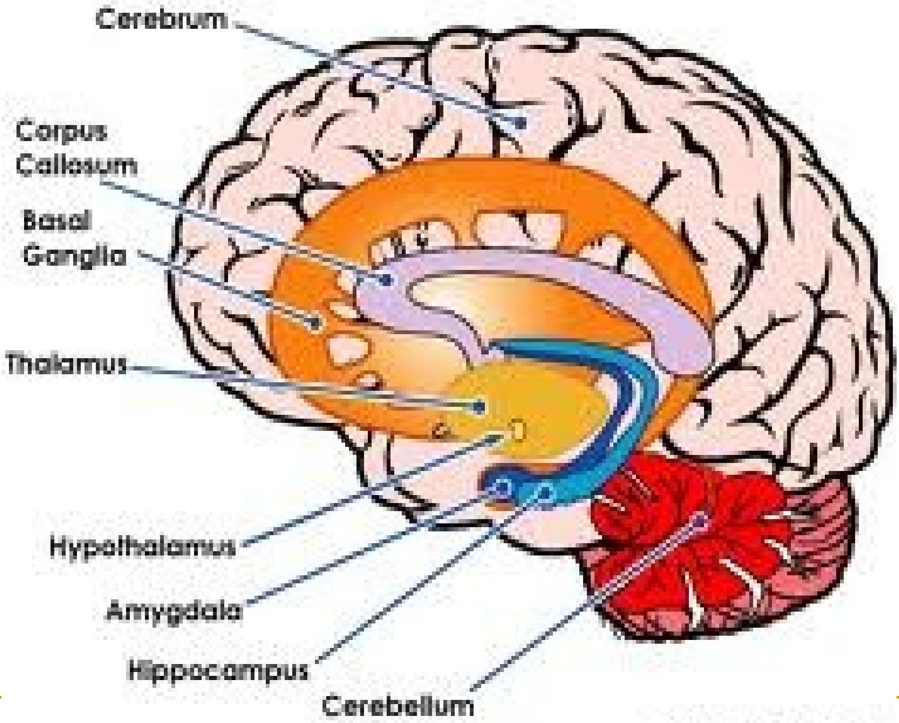As the cerebral hemispheres expand, they cover successively the diencephalons, midbrain and hindbrain. The two hemispheres meet each other in the midline at the interhemispheric fissure flattening their medial surfaces. The mesenchyme trapped in this longitudinal fissure gives rise to falx cerebri.
The basal ganglia (corpus striatum) appear during the 6th week as a prominent swelling in the floor of each cerebral hemisphere. Due to the presence of large basal ganglia, the floor of the hemisphere expands slower than its thin cortical walls; consequently the hemisphere becomes semicircular or C-shaped. This semicircular shape is due to downward and forward expansion of the caudal part of the hemisphere to form the temporal lobe. In doing so, a lateral (Sylvian) fissure is forming between the temporal and frontal lobes. Evagination of the temporal pole extends the temporal (inferior) horn of the lateral ventricle and increases the depth of the lateral (Sylvian) fissure.
Similar extensive evagination of the frontal and occipital poles extends the lateral ventricle in their directions to form anterior and posterior horns. Growth vectors in the cerebral wall force the hippocampal formation to migrate backward, downward, and forward in a semicircular arc, extending the transverse (choroid) fissure on the medial surface of the temporal lobe. As the cerebral cortex differentiates, fibers projecting to and from it pass through the corpus striatum dividing it into caudate nucleus and lentiform nucleus. This fiber pathway is called internal capsule. At the same time, the medial wall of the hemisphere and the lateral wall of the diencephalon fuse, and the caudate nucleus and thalamus come into close contact.
Caudate nucleus becomes elongated and C shaped, conforming to the outline of the lateral ventricle which is also C-shaped. Pear-shaped head and body of caudate lie in the floor of the anterior horn and stem of the lateral ventricle, whereas tail of caudate makes a U-shaped turn to reach the roof of the inferior horn of the lateral ventricle. As growth in the region overlying the corpus striatum is slow, the area between the frontal and temporal lobes become depressed- the insula. This region is later overgrown by adjacent lobes and by the time of birth is completely covered.
- Neurons of the globus pallidus originate in the subthalamus and migrate into white mater of the telencephalon to form the medial segment of the lentiform nucleus (globus pallidus).
Brain Development Stages
13 weeks

21 weeks
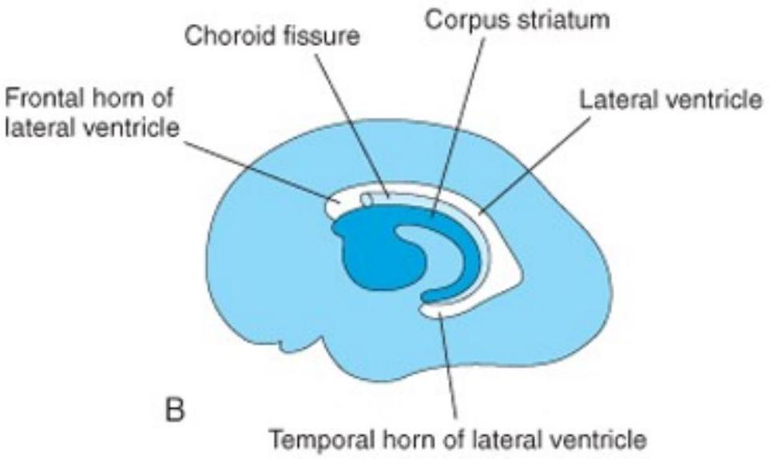32 weeks
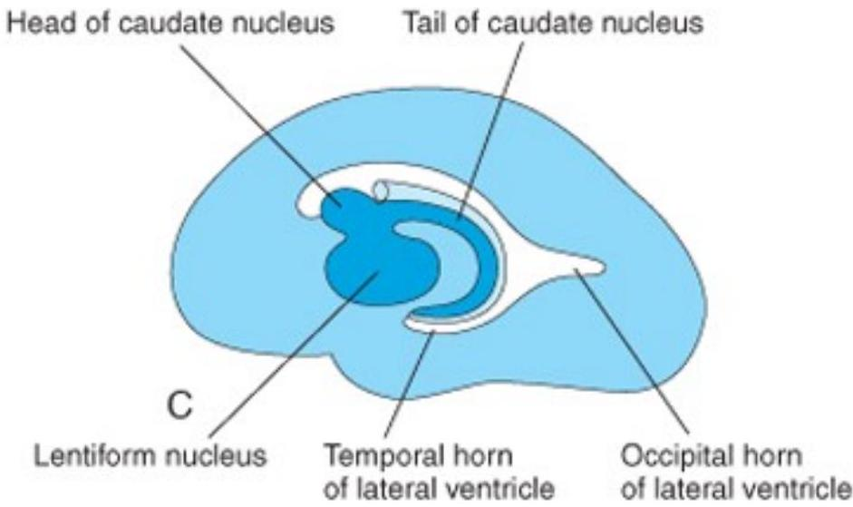 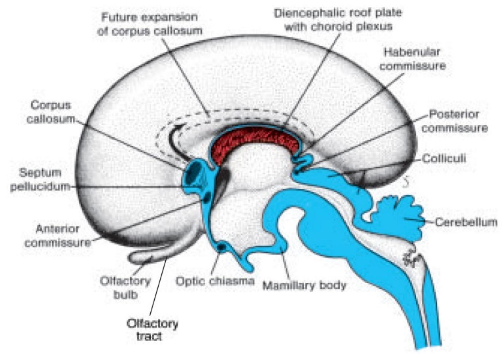Figure 19.30 Medial surface of the right half of the brain in a 4-month embryo showing the various commissures. Broken line, future site of the corpus callosum. The hippocampal commissure is not indicated.
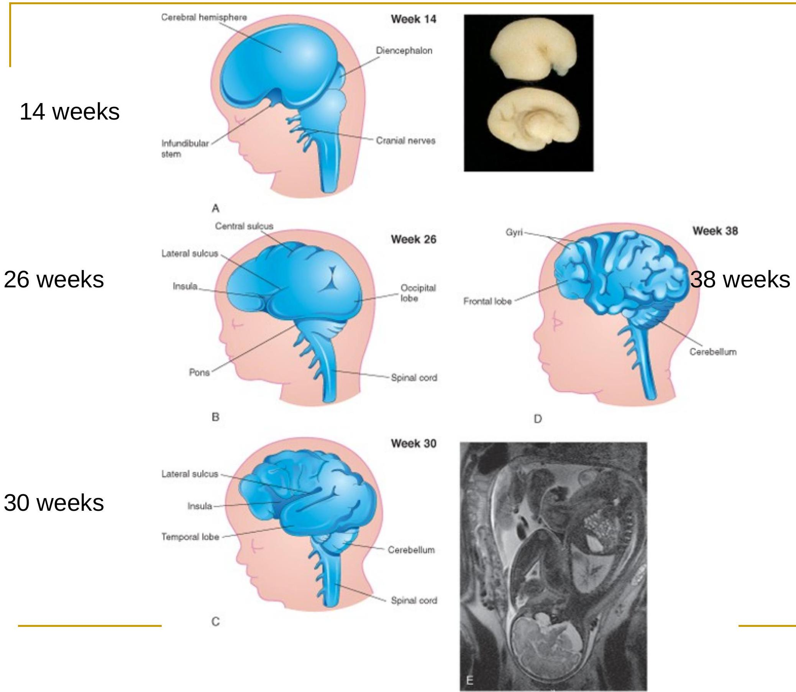
Figure 19.28 Development of gyri and sulci on the lateral surface of the cerebral hemisphere. A. 7 months. B. 9 months.
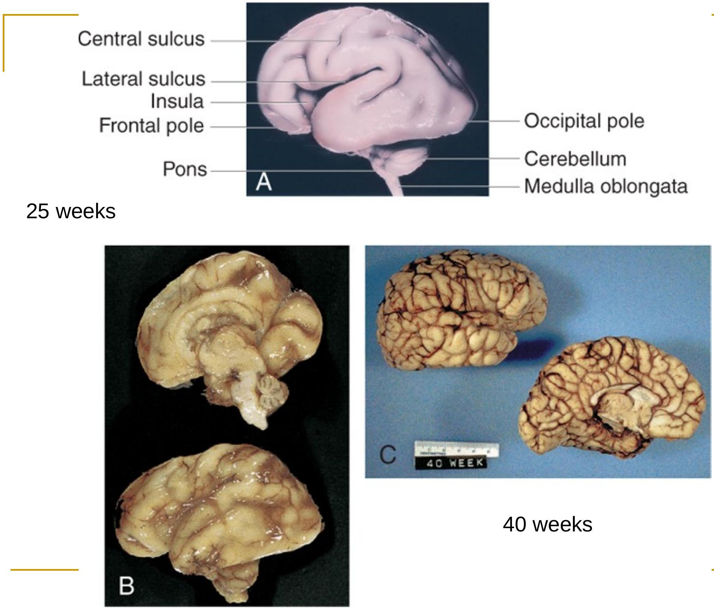40 weeks
Development of the cerebral cortex
In contrast with the spinal cord, gray mater of the brain is mainly peripherally situated. Histogenesis within the brain is characterized by cell migration. Cells of the mantle layer start migrating into the marginal zone in the 2nd month of gestation in the form of waves of neuroblasts that reach a subpial position and then differentiate into mature neurons. Cortical neuroblasts direct their axons inward. Successive waves of cortical neuroblasts leave the germinal zone at later times. Neurons for inner cortical layers migrate to the cerebral surface first. The next wave of neuroblasts migrates through earlier formed layers of cells until they reach a subpial position. Earlier formed neuroblasts obtain a deep position, while the newly arrived ones obtain a more superficial position in the cerebral cortex until neuroblasts cease to divide.
The four outer layers of cortical neurons develop after the inner two, in an inside-out sequence. The cortex shows its final 6 lamina by the 8th month of gestation. In their migration, neuroblasts are guided by radial glial cells. At birth, the cortex has a stratified appearance due to differentiation of the cells in different layers. The most common types of neurons in the cerebral cortex have pyramidal, stellate or fusiform shape. Less common types, the neurons of Martinotti and the horizontal neurons of Cajal have polygonal or fusiform shape. The cerebral cortex is made up of several layers which vary in number from 3 layers in the primitive cortex (hippocampus or archicortex) to 6 layers in dominant neocortex. The various types of stellate neurons, and Cajal and Martonitti neurons are cortical interneurons whose axons remain within the cerebral cortex.
- Axons from cell bodies (mainly from pyramidal cells) in the cortex pass centrally to form white mater of the cerebrum. The outer 4 cortical layers (layers I,II,III and IV) tend to be receptive and internuncial in function. The inner two layers ( V and VI ) tend to be projective in function. Cortical commissural and association axons arise mainly from neurons in layers II and III.
- Cytodifferntiation of the cerebral cortex is complex and is controlled by genetic, neurotropic, growth and hormonal factors.
Fissures alter the ventricular contour. These fissures are: interhemispheric (longitudinal) fissure, sylvian or lateral fissure, and transverse or choroid fissure. After the fissures appear, the cerebral surface remains smooth until sulcation commences in week 16. During later months, surface of the cerebral hemisphere grows so rapidly that many convolutions- gyri separated by sulci appear on the surface. Sulci indent the outer surface of the cerebrum but do not alter the ventricular contour. By the 7th month several sulci appear on the surface including the central and occipital sulci. Timetable of sulcation can be used to estimate the gestational age. Sulci and gyri permit a considerable increase in the surface area of the cerebral cortex. As the brain grows the gyral pattern becomes more complex. At birth the brain is about 25% of its adult volume.
Postnatal growth of the brain is due to:
- increase in neuronal sizes.
- proliferation of neuronal processes.
- proliferation of astrocytes.
- myelination of nerve fibers.

Development of white mater of cerebrum
White mater of the cerebrum is composed of:
- Axons, which run in organized tracts.
- Glia:
- Oligodendrocytes provide myelin.
- Astrocytes provide scaffolding.
- Blood vessels.
Destinations of cortical axons
Cortical axons may synapse on other cortical neurons or on infracortical neurons. The developing efferent axons are classified according to their destinations into:
- Association fibers. Axons of cortical neurons synapse on ipsilateral cortical neurons associating functions of these neurons. Short association fibers associate near by gyri, e.g. arcuate bundle. Long association fibers connect lobes or surfaces of the hemisphere, e.g. superior longitudinal bundle connects frontal and occipital lobes and inferior longitudinal bundle connects occipital and temporal lobes. The bundles receive and give axons along their course.
- Cerebral commissures. These are axons that cross the midline to synapse on contralateral neurons (mirror-image points). Anterior commissure is located in front of anterior column of the fornix and connects olfactory bulbs together. Hippocampal commissure connects the posterior columns of fornix together. Corpus callosum is the largest commissure which appears during the 4th month and connects neocortical areas together. Corpus callosum initially lies in the lamina terminalis, but fibers are added to it as the cortex enlarges. Posterior commissure is present inferior to the pineal body and connects pretectal and collicular areas of the two sides of midbrain. Habenular commissure forms the superior stalk of the pineal body and connects habenular nuclei together. Optic chiasma develops in the ventral part of lamina terminalis. It consists of fibers from the medial halves of the retinae which cross to join optic tract of the opposite side.
- Projection fibers. Cortical axons that synapse on infra-cortical neurons project the cortical influence onto the lower centers, e.g. internal capsule. Projection fibers end ipsilaterally and contralaterally.
Approximate time when various tracts appear
End of first month
- spinal trigeminal tract
- fasciculus solitarius
End of second month
- posterior commissure
- thalamic peduncles
- inferior cerebellar peduncle
- internal capsule
Third month
- anterior commissure
Fourth month
- corpus callosum
Fifth month
- pyramidal fibers
Phylogeny of the cerebral cortex
(1) Evolution of the cortical laminae
- In primitive animals the cerebral neurons tend to have reticular pattern. This pattern persists as paleocortex in subsequent animals (including human) in the olfactory areas.
- In higher submammals, e.g. reptiles, more neurons migrate to the cerebral surface where they start to laminate. In mammals, the cortex of 3 layers is present in the hippocampal formation and is called archicortex.
- Allocortex (archicortex and paleocortex) forms the inner ring of the three concentric rings of the hemisphere.
- Neocortex (isocortex) is formed of 6 layers of neurons:
- Mesocortex is the limbic cortex which is the second concentric ring of the cerebrum and is formed of the cingulate and parahippocampal gyri.
- Ecocotex is phylogenitically new and covers most of the cerebral surface. Overgrowth of ecocortex accounts for increasing brain size in higher animals. Ecocortex is also called supralimbic cortex.
(2) Increase number of cortical neurons
- Animals are arranged in series of increasing intelligence in proportion to the increasing number of neurons in their cerebrum, a phylogenetic process called encephalization.
- Two evolutionary events have markedly increased the number of cerebral neurons while limiting the head circumference to a manageable size: a)Cortex formation, which coats the cerebral hemisphere with many layers of neurons. b)Fissuration (sulcation), which infolds the spherical surface to increase its area relative to its circumference, enabling the greatest area to fit into the smallest space.
(3) Evolution of the semicircular (C-shaped) cerebral hemisphere
- Laterally: is by downward and forward evagination of the temporal lobe. Evagination of the temporal pole extends the inferior horn of the lateral ventricle, and lengthens and deepens Sylvian fissure. By this cerebral hemispheres have c-shaped as viewed externally.
- Medially: is by invagination of the roof plate and inrolling of the hippocampus which create the transverse fissure. Growth vectors in the cerebral wall force the hippocampus to migrate backward, downward and forward in a semicircular arc, extending the transverse fissure forward in the medial wall of the temporal lobe as the choroid fissure. Migration of hippocampus matches the semicircular configuration of the temporal lobe. The fornix strings out along the pathway of migration of the hippocampus retaining its anchor to the anterior commissure and mammillary body. The same process draws out the tail of caudate nucleus to curve and reach the roof of the inferior horn of the lateral ventricle.
Congenital malformations of the brain
Incidence: 3 : 1000 births.
Causes
- Genetic mutations or chromosomal abnormalities: as the cases of mental retardation with Down syndrome and Prader Willis syndrome.
- Environmental factors: exposure to teratogens as hyperthermia, irradiation, drugs (alcohol,valproic acid), viruses and toxoplasmosis.
- Nutritional: in foliate deficiency or hypervitaminosis A.
- Birth trauma: which may result in mental retardation.
- Multifactorial: combination of genetic and environmental factors.
Mechanisms
- Defective closure of the neural tube, particularily defective closure of the cranial neuropore.
- Alteration of morphogenesis or histogenesis due to exposure to teratogens or due to developmental failure of associated structures (notochord, somites, mesenchyme and skull).
Diagnosis
- Ultrasonography.
- Increased alpha-fetoproteins in amniotic fluid or serum of mother.
1-Cranium bifidum. Defect in occipital bone. If opening is small, only meninges protrude (meningocele), If large, part of the brain (meningoencephalocele) and even part of the ventricle (meningohydroencephalocele) penetrate through the opening into the meningeal sac.
2-Anencephaly (without a brain). Most of the brain and skull vault are missing. It results from failure of closure of rostral neuropore during the 4th week of development. The malformed brain tissue is exposed from the cranium - exencephaly. A rudimentary brain stem is always present in living infants; meroanencephaly is a better name for this anomaly (meros=part). Infants survive for only few hours after birth. Meroanencephaly occurs once every 1000 births, more common in female infants. It is associated with polyhydramnios because the fetus lacks the neural control of swallowing. It is suspected when there is elevated level of alpha-fetoprotein in the amniotic fluid. It is diagnosed by ultrasonography, radiology and fetoscopy.

anencephaly

3-Microcephaly is small size cranial vault due to small sized brain (microencephaly). Growth of the calvaria is largely dependent on growth of the brain. Facial skeleton is of normal size. The causes of microcephaly may be genetic (autosomal recessive), teratogenetic (exposure to rubella virus, cytomegalovirus, toxoplasmosis, ionizing radiation, and maternal alcohol abuse) or due to premature closure (synostosis) of the sutures of the skull. Impaired mental development occurs in more than half the cases. Microcephaly can be detected in utero by ultrasound.
microcephaly
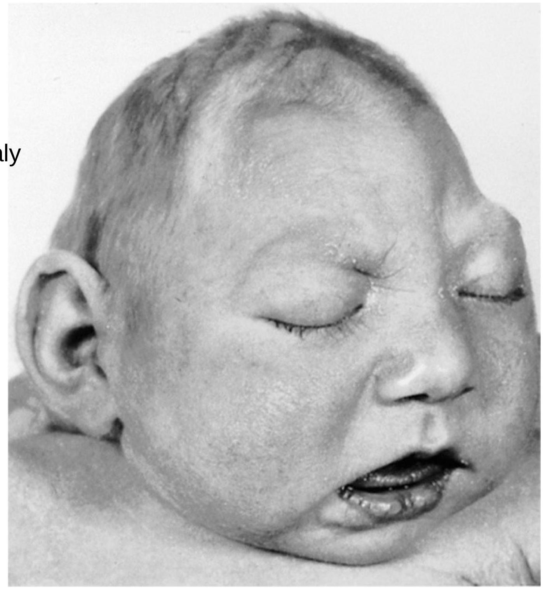4-Hydrocephalus is abnormal accumulation of CSF within ventricular system of the brain due to: (a) impaired circulation, (b) impaired absorption, (c) increased secretion (by choroid adenoma).
Varieties
a)Obstructive (non-communicating) hydrocephalus
Blockage of CSF flow is within the ventricular system, commonly due to aqueductal stenosis which may result from fetal viral infection or transmitted as X-linked recessive trait. Stenosis impairs circulation from 3rd to 4th ventricles. Lateral and 3rd ventricles are dilated. The brain is squeezed between the ventricular fluid and skull bones leading to its atrophy. Increased expansion of the brain causes widening of the spaces between skull bones and the head becomes very large.
b)Communicating (non-obstructive) hydrocephalus
Obliteration of the CSF circulation is in the subarachnoid space beyond the ventricular system and all ventricles are enlarged; due to
- Subarachnoid hemorrhage (associated with prematurity).
- Obliteration of subarachnoid cisterns.
- Malformation of arachnoid villi.
- Failure of opening of the 3 apertures of the 4th ventricle.
hydrocephaly


Congenital stenosis of the cerebral aqueduct. This sagittal magnetic resonance image of a 9 -month-old infant with a large head shows very large lateral and third ventricles. The cerebrospinal fluid (CSF) appears dark in these images. The cerebral aqueduct appears as a dark line of fluid ventral to the tectum of the
5-Holoprosencephaly
The foreorebrain remains holospheric. The prosencephalon fails to give two outpocketings and the prosencephalic cavity is a single holoventricle without a subdivision into lateral and third ventricles. Usually, there are associated defects of the corpus callosum, olfactory lobe (arhinencephaly), and facial anomalies. There is normal sulcation of the cerebrum and cerebellum. Genetic factors (Patu syndrome, trisomy 13), mutaion in SHH which regulates midline CNS structures. Maternal diabetes and alcohol abuse can destroy embryonic cells of the median plane resulting in failure of the forebrain to evaginate or invaginate. Defective cholesterol synthesis due to defective 7-DHC reductase may be the cause as the case of Smith-Lemli-Optiz syndrome. Cholesterol is necessary for SHH to act. Mutation in transcription factor TGF-1 can be a cause for HPE
Holoprosencephaly

6-Hydranencephaly. Cerebral hemispheres are represented by membranous sacs with remnants of cerebral cortex. Brainstem is intact. Infants appear normal at birth; however the head grows excessively after birth due to CSF accumulation. There is failure of mental and cognitive development. The cause of this rare and severe anomaly is occlusion of blood flow to areas supplied by the internal carotid artery, or from encephalitis in utero caused by rubella, herpesvirus, cytomegalovirus Or toxoplasmosis.
hydranencephaly
7-Mental retardation
8-16 week is critical period for brain development. By the end of week 16, most neuronal proliferation and cell migration to the cerebral cortex are completed. Cell depletion or damage during this period results in mental retardation. Mental retardation may not be associated with brain abnormalities.
Congenital impairment of intelligence may result from
- Genetic mutation or chromosomal defects (trisomy 13,18,21).
- Maternal alcohol abuse.
- Exposure to irradiation during 8-16 w .
- Inborn error of metabolism (phenylketonuria).
- Exposure to infectious agents; rubella, toxoplasmosis.
- Cretinism.
- Microcephaly.
Mental retardation during postnatal period may result from:
- Cerebral trauma.
- Cerebral infections (encephalitis, meningitis).
- Exposure to toxins (lead, mercury).
- Birth injuries.
8-Cerebral palsy is one of the most crippling conditions of childhood. This central motor deficit may be due to prenatal factors or birth trauma.
9-Schizencephaly is a rare disorder in which large clefts occur in the cerebral hemispheres. Mutation of homeobox gene EMX2 is responsible for this case.
10-Porencephaly is a wide defect in the cerebral hemisphere and is associated with mental deficiency and cerebral palsy.
11-Arnold-Chiari malformation: is caudal displacement and herniation of the cerebellum and medulla through foramen magnum, and is associated with hydrocephalus and spina bifida.
12-Dandy-Walker syndrome is a huge cyst of posterior cranial fossa associated with atresia of 4th ventricle apertures. There is distension of the 4th ventricle, agenesis of cerebellar vermis,agenesis of corpus callosum and occipital meningocele.

An Arnold-Chiari type II malformation in a 23week gestational age fetus. In situ exposure of the hindbrain reveals cerebellar tissue (arrow) well below the foramen magnum. B, Magnetic resonance image of a child with Arnold-Chiari type I malformation. Note the cerebellar tonsils lie inferior to the foramen magnum
13-Agenesis of corpus callosum may be partial or complete, asymptomatic or with seizures and mental deficiency.
14-Agenesis of cerebral cortex with various degrees of idiocy.
15-Focal heterotopic cerebral cortex due to lack of organized cortex as a result of arrest of centrifugal migration of neuroblasts along radial processes of glia cells. It presents with various forms of seizures.
16-Cerebellar agenesis is absence of one cerebellar hemisphere and present with disturbances in balance and coordination.

Sagittal magnetic resonance imaging of the brain of a 22-year-old woman with normal mentation and motor function. There is complete absence of the corpus callosum. B, A coronal slice through a child's brain showing agenesis of the corpus callosum, which would normally cross the midline to connect the two cerebral hemispheres. Note the thalamus (T) and the downward displacement of

Focal cortex. image of a 19-year-old woman with seizures showing a focal heterotopic cortex of the right parietal lobe, indenting the right lateral ventricle; note the lack of organized cortex at the overlying surface of the brain. Heterotopic cortex is the result of an arrest of centrifugal migration of neuroblasts along the radial processes of glial cells.
DEVELOPMENT OF PERIPHERAL NERVOUS SYSTEM
Peripheral nervous system consists of nerves (spinal, cranial and visceral) and ganglia (spinal, cranial and autonomic).
Spinal ganglia
All sensory cells (somatic and autonomic) of PNS are derived from neural crest cells, and located outside the CNS. These cells are at first bipolar, but the two processes unite to form a single process,so become psudounipolar. These unipolar cells have a peripheral process terminating in a sensory ending (receptor) and a central process entering spinal cord. The cell bodies are invested by a capsule of modified Schwann cells -satellite cells- derived from neural crest cells. Outside satellite cells is a layer of connective tissue derived from mesenchyme.
Spinal nerves
Motor fibers of spinal nerves arise from the basal plates (ventral horns) of the developing spinal cord. Fibers grow and emerge as rootlets along the ventrolateral surface of the spinal cord and are called ventral root of the spinal nerve. Fibers of the dorsal root are formed by axons of cells of the spinal ganglion which grow toward the spinal cord opposite the dorsal horns (alar plates) of gray mater. Peripheral processes of spinal ganglion cells grow toward ventral nerve root and fuse with it to form spinal nerve trunk which divides immediately into dorsal ramus (supplies muscles and skin of the back) and ventral ramus (supplies muscles and skin of limbs and ventrolateral body wall). Nerves from spinal cord segments opposite a limb bud grow into this bud to supply its muscles. Skin of limbs is also supplied in a segmental manner.
Cranial ganglia
- Sensory ganglia of the cranial nerve are derived from neural crest cells. They contribute to ganglia of cranial nerves for the pharyngeal arches (V,VII,IX,X).
- Parasympathetic ganglia of cranial nerves III,VII,IX and X are derived from neural crest cells.
Cranial nerves
By the 4th week of development, nuclei of all 12 cranial nerves are developed. Except the olfactory and optic nerves, all arise from the brain stem.
DEVELOPMENT OF AUTONOMIC NERVOUS SYSTEM
Sympathetic Nervous System
In the 5th week, cells originating in the neural crest of the thoracic region migrate on each side of the spinal cord behind the dorsal aorta and form bilateral chain of segmentally arranged sympathetic ganglia interconnected by nerve fibers. Together, they form sympathetic trunks located on each side of the vertebral column (paravertebral chain). From this position in the thorax, neuroblasts migrate toward the cervical and lumbosacral regions, thus extending the sympathetic chains to their full length.

Figure 19.42 Formation of the sympathetic ganglia. A portion of the sympathetic neuroblasts migrates toward the proliferating mesothelium to form the medulla of the suprarenal gland.

Figure 19.43 Relation of the preganglionic and postganglionic nerve fibers of the sympathetic nervous system to the spinal nerves. Note the origin of preganglionic fibers in the visceroefferent column of the spinal cord.
Although, initially, the ganglia are arranged segmentally, this arrangement is later obscured in the cervical region, by fusion of the ganglia. Some neural crest cells migrate ventral to the aorta and form preaortic (prevertebral) ganglia such as coeliac and mesenteric ganglia. Other neural crest cells migrate to the area of the heart, lungs, and gastrointestinal tract, where they form terminal ganglia in autonomic plexuses located near or within these organs. Other neural crest cells migrate retroperitoneally to form scattered paraganglia -chromaffin cells. These widely scattered groups of chromaffin cells constitute the chromaffin system. These cells are similar to cells of the suprarenal medulla.
Preganglionic sympathetic axons arise from lateral horn cells of the thoracolumbar segments of the spinal cord and exit with the ventral roots of spinal nerves. Axons enter the nerve trunk and take one of four courses:
- They may form white rami communicants to synapse with postganglionic neurons in sympathetic ganglion at the same level of the nerve trunk. White rami are found only in the thoracolumbar region of the spinal cord.
- They may ascend or descend to synapse with ganglia of the sympathetic chain at higher or lower levels.
- They may bypass paravertebral chain to synapse in a prevertebral ganglion.
- They may pass through sympathetic chain without synapsing , forming splanchnic nerves to the viscera.
From a sympathetic ganglion, the postsynaptic (postganglionic) axon may rejoin an adjacent nerve trunk by way of a gray ramus communicans, or travel rostrally or caudally in the sympathetic chain to another nerve trunk. Gray rami communicants are present at all levels of the spinal cord. Postganglionic sympathetic fibers are distributed with spinal nerves to peripheral blood vessels, sweat glands and hairs.
Parasympathetic Nervous System
Parasympathetic neurons are located in the brain stem and in the sacral region of the spinal cord (craniosacral). The presynaptic (preganglionic) parasympathetic fibers from nuclei in the brain stem travel via the oculomotor, facial, glossopharyngeal and vagus nerves to relay in ganglia derived from neural crest cells. Postganglionic parasympathetic fibers innervate sphincter pupillae, lacrimal and salivary glands, heart and the viscera. The sacral preganglionic parasympathetic axons arise from the sacral segments of the spinal cord (S2-S4). They exit through ventral roots forming the sacral plexus, and then enter the pelvic splanchnic nerves which with the sympathetic axons form pelvic plexus and then run to postganglionic neurons (terminal ganglia) located in the wall of pelvic viscera.
Congenital aganglionic megacolon (Hirschsprung disease)
Incidence: 1:5000 births, male more than female :4/1
Mechanism: Failure of neural crest cells to migrate into wall of large colon. Consequently, no parasympathetic ganglia form in the affected areas. Rectum and sigmoid colon are involved in most of the affected infants. Ascending and transverse colon are affected in 10-20% of cases. The colon is dilated above the affected region, which has a small diameter due to tonic contraction of noninnervated vasculature. The affected segment is constricted and paralyzed, which results in distention of the proximal, normally innervated bowel.